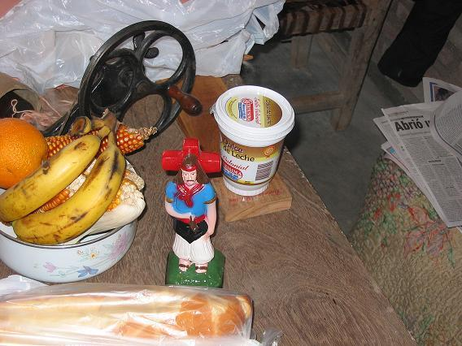
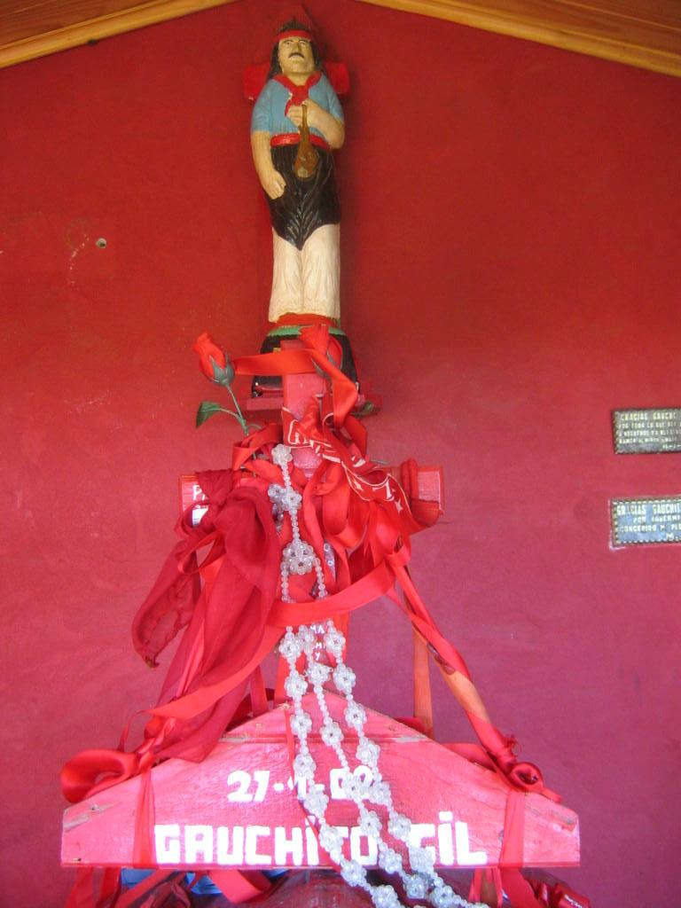

Bienvenidos al primer altar online del Gauchito Gil, una revisión digital de lugares reales en la provincia de Córdoba (y similares en el resto de Argentina).
Primero, conozcan al ídolo nacional, pasión de multitudes. Un hombre patrio:
Ahora, vean su manifestación popular en la ruta:
Bibliografía
Especificación de MM7 (para envio de MMS)
Especificación SMPP y más datos (esto es para SMS)
-
Colas, eventos publish/subscribe (cosas para meter en el framework)
-
Lucio Dixit:
Eso nomás para ir tirando una idea de herramientas (o conceptos de herramientas, [comentario por las colas MQ, que no vamos a comprar]) que se pueden dar al momento de hacer la aplicación basada en nuestro gateway. Para mí la idea sería hacer más que solo un protocolo de send-SMS/MMS (aunque eso tiene que estar). Sino crear una suite de herramientas para hacer aplicaciones con eso.
Workflows
Matcheo de Eventos Sub Lineal
Para esto ver el siguiente pdf:
Para ver el resultado de esto ver EventMatching
Reactor : An Object Behavioral Pattern for Concurrent Event Demultiplexing and Dispatching
Este es un pattern interesante que estamos considerando
Modular Event-Based Systems
Sobre como tiene que comportarse un sistema de eventos